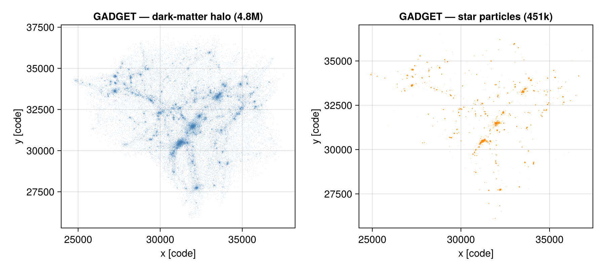

Reading GADGET data (experimental)
The GADGET particle load and the AREPO/IllustrisTNG gas-cell analysis below (physical getvar(:rho/:T/:metallicity), PDFs/profiles, point and SPH-kernel maps on a real TNG halo) are exercised end-to-end in the runnable 16_multi_OtherCodes.ipynb notebook, which also drives Mera's coverage.
Mera's analysis layer is code-blind, so a reader only has to fill the standard structs. This page adds a frontend for the GADGET HDF5 snapshot format — also written by GIZMO, AREPO, SWIFT, EAGLE and IllustrisTNG — so getvar, projection, msum, center_of_mass and the rest run on its particles unchanged.
AREPO/TNG snapshots use this same format but are auto-detected as AREPO and get richer handling (gas-cell physics in physical units, comoving→physical a/h, Voronoi maps) — see the dedicated AREPO page.
GADGET is particle-based (no Eulerian grid), so this is a particle reader: it loads the PartType* groups into a Mera PartDataType via getparticles. For gas (PartType0, e.g. AREPO/TNG) the cell fields present in the file are read as columns — Density→:rho, InternalEnergy→:u, ElectronAbundance→:ne, GFM_Metallicity→:metallicity, StarFormationRate→:sfr, NeutralHydrogenAbundance→:nh, Machnumber→:mach, the MagneticField vector→:bx,:by,:bz (MHD, physical Gauss), Potential→:gpot — and :volume = mass/ρ is derived; getvar adds :T, :p, :cs (temperature from :u+:ne, with a neutral-primordial μ fallback when :ne is absent). Base CGS units are read from the snapshot Header, and for cosmological runs the comoving→physical a/h factors are applied automatically. 3-D.
Usage
getinfo / getparticles auto-detect GADGET from the HDF5 Header group:
using Mera
info = getinfo(200, "/path/to/gadget/run") # finds snap…_200.hdf5, simcode = "GADGET"
part = getparticles(info) # a PartDataType (:x,:y,:z,:vx,:vy,:vz,:mass,:id,:family)
msum(part); center_of_mass(part); getvar(part, :vx):family is the GADGET particle type — 0 gas, 1 halo/DM, 2 disk, 3 bulge, 4 stars, 5 boundary/BH. On a large snapshot, restrict to a subset with the frontend directly to keep RAM bounded:
stars = getparticles_gadget(info; families=[4]) # just the star particles
dm = getparticles_gadget(info; families=[1]) # just the dark matterMasses come from each type's Masses dataset, or from Header/MassTable for types that store a single per-type value (e.g. dark matter).
Loading a spatial sub-region
getparticles honours the RAMSES spatial-window arguments xrange/yrange/zrange (with center/range_unit). Particles outside the box are dropped per type as they are read, so a sub-region of a huge snapshot never accumulates in memory:
# the central 20 % box (fractions of the box, relative to its centre)
part = getparticles(info; xrange=[-0.1, 0.1], yrange=[-0.1, 0.1], zrange=[-0.1, 0.1],
center=[:bc], range_unit=:standard)The result equals a full load filtered by getvar(:x), and the window is recorded in part.ranges. Combine with families= (on the frontend) to load, say, only the stars in a region.
Worked example: the yt GadgetDiskGalaxy sample
The yt GadgetDiskGalaxy sample is a z ≈ 1.9 galaxy with ~11.9M particles (4.3M gas, 4.8M DM, 2.3M disk, 451k stars). getinfo prints the overview:
julia> info = getinfo(200, "/data/gadget_diskgalaxy/GadgetDiskGalaxy");
Code: GADGET
output: 200 time: 0.34483 redshift: 1.9
boxlen = 64000.0
particles: 4334546 gas, 4786616 halo/DM, 2333848 disk, 450921 stars, 1149 bndry/BH (total 11907080)
-------------------------------------------------------and the particles plot directly — the dark-matter cosmic web and the star particles tracing the forming galaxy:
dm = getparticles_gadget(info; families=[1]); st = getparticles_gadget(info; families=[4])
# scatter getvar(dm,:x) vs getvar(dm,:y), and the stars — or project with a finer lmax/res
Gas analysis (AREPO / IllustrisTNG)
For gas (PartType0) the cell fields are read alongside the kinematics, so the full thermodynamic analysis runs through the usual getvar/projection calls — in physical units:
info = getinfo(59, "/data/TNG/halo_59") # IllustrisTNG cutout (AREPO)
gas = getparticles(info; families=[0]) # PartType0 → :rho,:u,:ne,:metallicity,:sfr,:volume
getvar(gas, :rho, :g_cm3) # physical density (a/h applied for cosmological runs)
getvar(gas, :T) # temperature [K] from :u (+ :ne when present)
getvar(gas, :metallicity) # mass-fraction metallicity
pdf(gas, :rho); profile(gas, :r_sphere, :T) # PDFs / radial profiles on the gasMaps come from the particle projection, which deposits each Voronoi cell at its position. Extensive maps (surface density) are mass-conserving to machine precision (Σ pixel·area == msum); intensive maps (temperature, metallicity) take a weighting:
projection(gas, :sd, :Msol_pc2) # surface density (mass-conserving)
projection(gas, :T, weighting=:mass) # mass-weighted ⟨T⟩ (dense gas)
projection(gas, :T, weighting=:volume) # volume-weighted ⟨T⟩ (diffuse gas)
projection(gas, :sd, :Msol_pc2, weighting=:sph) # SPH-kernel: smear each cell over its footprintAREPO is a Voronoi moving-mesh code — gas lives in irregular polyhedral cells, not on a grid and not as SPH particles. The default deposits each cell at its mesh-generating point (fast, mass-conserving, but it ignores the cell's extent and can speckle in sparse regions). weighting=:sph is the moving-mesh conversion: it smears every cell over an M4 cubic-spline kernel sized from the cell volume (h = α·(3V/4π)^⅓, floored at one pixel), treating each Voronoi cell as an SPH-like blob — the same approach yt uses for AREPO. It resolves each cell's footprint while staying mass-conserving to machine precision (Σ pixel·area == msum for cells inside the field; cells straddling the edge contribute only their in-field share). For a genuinely cell-respecting map, weighting=:voronoi (nearest generator: each line-of-sight sample is assigned to its nearest cell via a KD-tree, capped at the cell's effective radius) gives sharp, piecewise-constant cells — intensive quantities (T, metallicity) are exact (the column ratio cancels cell-volume errors); surface density is approximate (use :sph/:mass for conserving column mass). A fully Voronoi-exact renderer (analytic polyhedron–pixel clipping, as in AREPO's ArepoVTK) would be more faithful still but is rarely needed. Comoving→physical a/h is applied automatically for cosmological snapshots.
(Tip: for a halo cutout in a large box, zoom the projection — center=[…], range_unit=:kpc, xrange=[-R,R], … — and raise res so the window spans enough pixels, since res is full-box-relative.)
Units
GADGET data is in code units (commonly length kpc/h, mass 10¹⁰ M⊙/h, velocity km/s, with h the dimensionless Hubble parameter). The base CGS units are read from the Header (UnitLength/Mass/Velocity_in_*), so getvar(gas, :rho, :g_cm3), getvar(part, :vx, :km_s), etc. return physical quantities out of the box; the unit_length/unit_density/unit_velocity keywords override them. Cosmological metadata (Time = scale factor, Redshift, HubbleParam, Omega0/OmegaLambda) is read from the Header, and a run is treated as cosmological when OmegaLambda > 0. For cosmological runs the comoving→physical factors are applied automatically: positions ∝ a/h, density ∝ h²/a³, mass ∝ 1/h, and velocities carry the √a factor — so a code that returns physical values to getvar needs no manual h/a bookkeeping. (A non-cosmological run, OmegaLambda = 0, is left untouched: a = 1, Time is a physical time.)
How it maps onto Mera's structs
Each PartTypeN group has Coordinates/Velocities (3×N), ParticleIDs, and optionally Masses. The reader concatenates the requested types into one PartDataType with columns (:x,:y,:z, :vx,:vy,:vz, :mass, :id, :family) — positions in code units [0, boxlen], exactly the convention the RAMSES/PLUTO particle readers use, so the particle analysis works unchanged. The mapping is verified data-free in test/60_gadget_reader_tests.jl (a synthesised GADGET file with a MassTable fallback) and on the real GadgetDiskGalaxy sample.
Reference readers
The GADGET HDF5 layout is shared and well-documented; this frontend agrees with the origin tools:
- The GADGET snapshot specification — the
Header+PartType*group format (Coordinates/Velocities/Masses/ParticleIDs,Header/MassTable/BoxSize/…), documented in the GADGET-4 guide and reused by GIZMO, AREPO, SWIFT, EAGLE and IllustrisTNG. - yt — its particle frontends read the same format and select sub-volumes lazily via data objects; Mera's load-time window mirrors that on the particle list. The GadgetDiskGalaxy sample used above comes from the yt sample-data collection.
See also
- Multi-code support — the code-blind architecture and the other readers.
getparticles,getvar,projection— the particle analysis that runs on GADGET data.